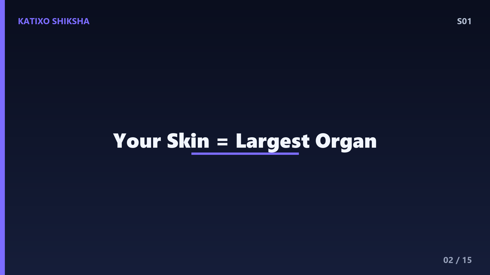
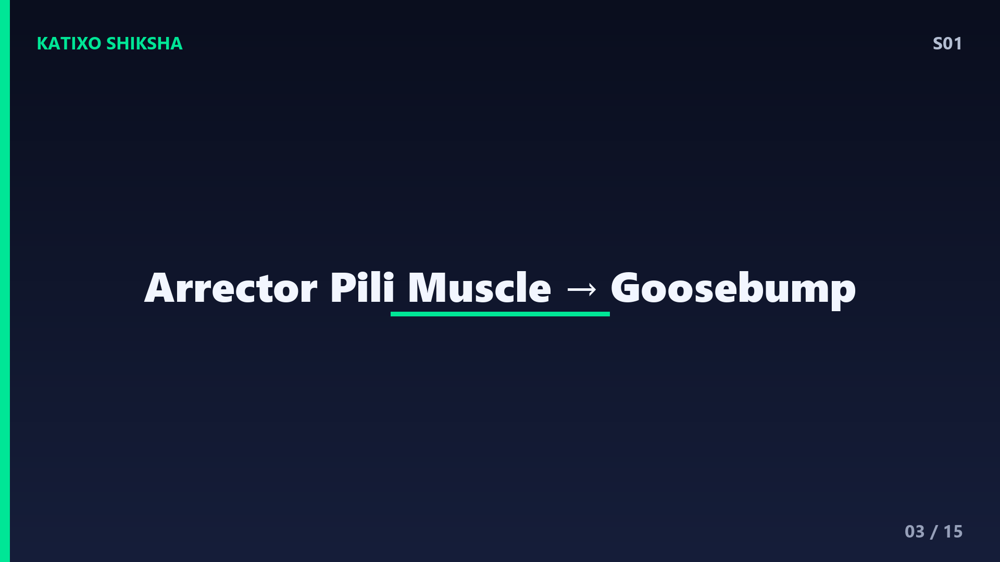
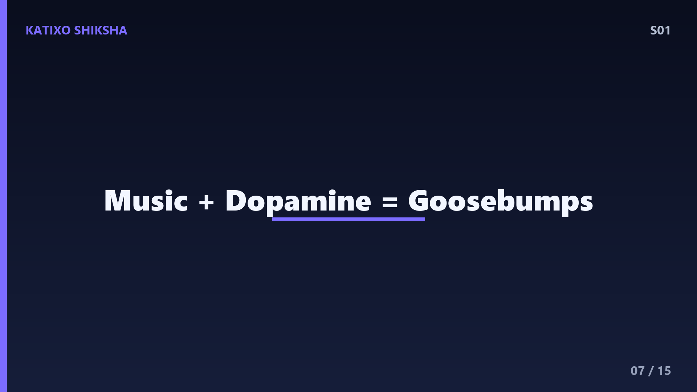
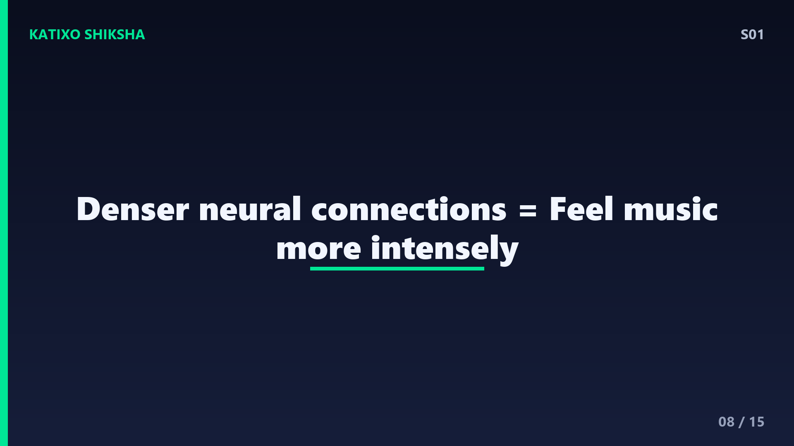
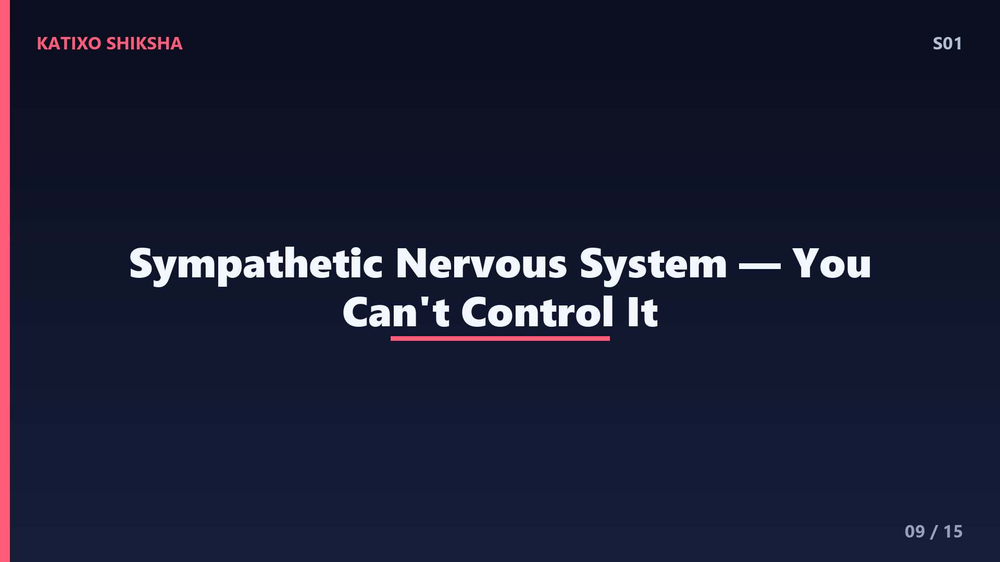
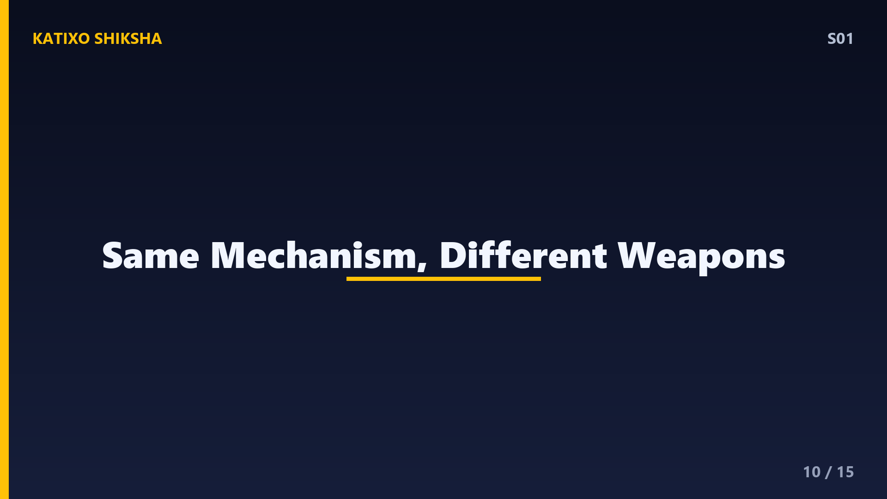

S01 — Why Do You Get Goosebumps?
Slide 1You're watching a horror movie. Suddenly — the lights flicker, music gets intense, and BOOM — tiny bumps appear all over your arms. Goosebumps! But here's the real question — why does your skin do this? What possible reason could your body have for making your arm look like a plucked chicken? Today on Katixo Shiksha, we're solving this mystery. And trust me, the answer goes back thousands of years. Let's go!

Slide 2Before we get to goosebumps, you need to understand something about your skin. Your skin isn't just a flat sheet covering your body. It's a full-on organ — the largest organ you have, actually. And it's loaded with tiny structures. One of those structures is the hair follicle — a tiny pocket in your skin from which hair grows. Attached to every single hair follicle is a microscopic muscle called the arrector pili muscle. Remember that name — it's the star of today's episode.

Slide 3So here's what happens. When you feel cold, scared, or emotionally overwhelmed, your brain sends a signal through your nervous system. This signal reaches those arrector pili muscles, and they contract — they squeeze. When they squeeze, they pull the hair follicle upward, making the hair stand straight up. And the skin around the hair gets pushed into a tiny bump. That bump? That's your goosebump. Millions of tiny muscles flexing at the same time. Your body is basically doing a micro-workout without asking you.
Slide 4But why would your body evolve to do this? Let's rewind — way, way back. Your ancient ancestors were much hairier than you. Think full body fur, like a chimpanzee. When they were cold, the arrector pili muscles would make all that thick fur stand up. Standing fur traps a layer of warm air close to the skin — like a natural blanket. It's the same reason a puffy jacket keeps you warm — trapped air is an amazing insulator. So goosebumps were your ancestors' built-in heating system.
Slide 5Now here's the second reason — and it's way more dramatic. Imagine your ancient ancestor walking through a forest and suddenly facing a predator — a saber-toothed tiger, let's say. Their body would trigger the fight-or-flight response. Adrenaline floods the system, heart rate spikes, and those arrector pili muscles fire up. All the fur stands on end, making the body look bigger and more intimidating. Animals still do this today. Ever seen a cat arch its back with fur puffed out? Exact same mechanism. Your goosebumps are a leftover threat display.
Slide 6This brings us to a cool biology concept — vestigial responses. A vestigial response is something your body still does even though it's no longer useful. You don't have thick fur anymore. Standing up your tiny arm hairs doesn't make you look bigger or keep you warm. But the wiring is still there in your nervous system. It's like an old app on your phone that still runs in the background even though you never use it. Evolution doesn't remove things quickly — it just stops selecting for them.

Slide 7OK so cold and fear make sense. But why do you get goosebumps when you hear an amazing song? Or when someone gives a powerful speech? Or during that one scene in your favourite movie? This is where it gets really interesting. Scientists believe emotional goosebumps are connected to dopamine — the brain's reward chemical. When something deeply moves you, your brain releases a surge of dopamine, and this triggers the same sympathetic nervous system pathway that handles cold and fear. Your body literally can't tell the difference between being terrified and being deeply moved.

Slide 8There's actually a study from Harvard that found people who get frequent music-induced goosebumps have denser nerve fibre connections between the auditory cortex — the part that processes sound — and the emotional processing areas of the brain. In other words, if you get goosebumps from music a lot, your brain is literally wired to feel things more intensely. It's not being dramatic. It's neuroscience. So next time someone says 'it's just a song,' you can tell them — my brain is structurally built different.

Slide 9Let's talk about the nervous system behind all this. Goosebumps are controlled by the autonomic nervous system — the part you can't consciously control. Specifically, it's the sympathetic branch, the one responsible for fight-or-flight. This is why you can't give yourself goosebumps on command. Try it right now — try to make the hair on your arm stand up. You can't, right? Because voluntary muscles like your biceps are controlled by a different system. The arrector pili muscles are involuntary. Your conscious brain has no access to them.

Slide 10Fun fact — some animals have taken this mechanism to an extreme. Porcupines, when threatened, don't just raise their fur — they raise hardened quills. Same arrector pili mechanism, but weaponized. A frightened porcupine can make its quills stand at different angles to maximize damage. And here's a wild one — the pufferfish. It inflates its body to make its spines stick out. Different mechanism, same evolutionary idea: look bigger, look scarier, survive longer.
Slide 11Here's a common misconception — goosebumps are NOT the same as shivering. Shivering is your skeletal muscles rapidly contracting to generate heat through movement. Goosebumps are your tiny skin muscles contracting to raise hair. Shivering actually warms you up. Goosebumps, for modern humans with barely any body hair, don't really help at all. They're just your body running an outdated programme. But both are triggered by the same cold-detection system, which is why they often happen together.
Slide 12Scientists have also discovered something fascinating — goosebumps might have a role in hair regeneration. A 2020 study from Harvard found that the sympathetic nerves connected to arrector pili muscles also connect to hair follicle stem cells. When these nerves fire frequently, they can actually stimulate new hair growth. So your body's goosebump machinery might be secretly maintaining your hair. The more we study something as 'simple' as goosebumps, the more complex it turns out to be. Biology never has just one answer.
Slide 13Quick brain check! Question one — what is the name of the tiny muscle that causes goosebumps? Question two — why did goosebumps help our ancient hairy ancestors survive in the cold? Question three — what neurotransmitter is linked to emotional goosebumps from music? Pause the video and think about it. Seriously — don't just let the answers wash over you. Active recall is how your brain actually learns. Try it, then play.
Slide 14Answers! Question one — the arrector pili muscle. Question two — standing fur traps a layer of warm air against the skin, acting like insulation. Question three — dopamine! The brain's reward chemical. If you got all three, your neural pathways are firing nicely. If you missed one, rewind that section — repetition builds memory.
Slide 15So here's your takeaway. Goosebumps are a vestigial response — a leftover from when our ancestors had thick fur. They served two purposes: trapping warm air for insulation, and puffing up fur to look intimidating to predators. Today, they still fire because the wiring exists in our autonomic nervous system, triggered by cold, fear, and intense emotions via dopamine. Your body is a living museum of evolution. Next episode — we're going invisible. How does WiFi actually work? Signals you can't see, carrying data through walls. Subscribe so you don't miss it. Bye!